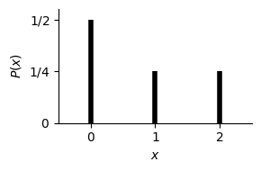

import matplotlib.pyplot as plt
import numpy as np
from scipy.stats import norm, gamma
5. Entropy and the Second Law of Thermodynamics#
Relevant readings and preparation:
Concepts in Thermal Physics: Chapter 13 (13.1–13.3, 13.5), Chapter 14 (14.1–14.2, 14.5)
University Physics with Modern Physics 15th edition: Chapter 20
Entropy video: https://www.youtube.com/watch?v=uQSoaiubuA0
Learning outcomes:
Distinguish reversible and irreversible thermodynamic processes
Relate macroscopic irreversibility to microscopic disorder
Define entropy from thermodynamic and statistical perspectives
Connect entropy with probability
5.1. Review: Probability and Statistics#
Probability is the mathematical framework that allows us to quantify uncertainty, and it is ubiquitous across all fields of scientific study, alongside finance sectors, software development, politics and so forth. Probability theory has had an undeniably strong impact in furthering our understanding of thermal physics. This is because we often study systems containing a practically uncountable number of particles, where individual atomic behaviour is unpredictable but collective behaviour is remarkably regular.
Let us begin by outlining the key properties that define probabilities:
A probability is a non-negative number between 0 and 1 (inclusive).
An outcome is a single possible result of a random experiment, with an associated probability.
An event is a set of one or more outcomes.
The collection of all possible outcomes is called the sample space.
The probabilities of all outcomes in the sample space sum to one (an event with probability one is certain).
Discrete Distributions#
Discrete random variables can only take values from a finite or countable set. A classic example is a six-sided die, whose outcomes are {1, 2, 3, 4, 5, 6}. If we denote \(x\) as a discrete random variable that takes values \(x_i\) with corresponding probabilities \(P_i\), we can define several useful quantities that describe its behaviour.
First, we require that the probabilities of all outcomes must add up to one:
The arithmetic mean, or expected value, is defined as:
Intuitively, the idea is that for each outcome contributes to the sum in proportion to how likely it is to occur. This is called weighting. If you were to sample the random variable many times, add up all the observed values, and divide by the number of trials, the result would converge to the expected value. We may also define the “mean squared” value:
import numpy as np
import matplotlib.pyplot as plt
x = np.array([0, 1, 2])
P = np.array([1/2, 1/4, 1/4])
plt.figure(figsize=(3,2))
plt.vlines(x, 0, P, colors='k', lw=4)
plt.xlabel(r"$x$")
plt.ylabel(r"$P(x)$")
plt.xlim(-0.5, 2.5)
plt.ylim(0, 0.55)
plt.xticks([0,1,2])
plt.yticks([0,0.25,0.5], [r"$0$", r"$1/4$", r"$1/2$"])
for spine in ['top','right']:
plt.gca().spines[spine].set_visible(False)
plt.tight_layout()
plt.show()

Continuous distributions#
Let \(x\) now be a continuous random variable, meaning it can take any value within some range (the bounds may be finite or infinite). We must treat probabilities differently in this case. Imagine a uniform distribution between 1 and 10: one sample might give an exact value like 4, another could be something extremely specific like 3.14159265… Because there are infinitely many possible values, the probability of landing on any one exact value is effectively zero. Instead, we talk about the probability of \(x\) lying within a small interval of width \(dx\).
Many real-life quantities are described by continuous distributions. For example, height, commute durations, and local temperature all vary smoothly within finite limits, even if the exact value can be anything within the range. As before, the total probability must sum to one, but because we are now summing over a continuous range, we replace sums with integrals:
We have analogous expressions for \(\langle x \rangle\) and \(\langle x^2 \rangle\):
Expectation under a linear transformation#
Because the expectation operator \(\langle \cdot \rangle\) is linear, the mean of a transformed variable follows the transformation directly. Scaling random variable \(x\) by \(a\) and shifting by \(b\) means the average value is also scaled by \(a\) and shifted by \(b\):
A constant (i.e. \(b\)) merely contributes its own value to the expectation, and constant factors (i.e. \(a\)) simply pass through the expectation operator. The full process of calculating \(\langle y \rangle\) following its production through the linear transformation \(y = ax+b\) is as follows:
Variance under a linear transformation#
Variance behaves slightly differently. Shifting by \(b\) has no effect, because moving a distribution left or right does not change its spread. Scaling by \(a\) however does stretch/compress the distribution, manifesting as a squared scaling of the variance. For a variable \(x\) transformed linearly via \(y = a x + b\):
Starting with the standard definition of the variance:
and substituting \(y = a x + b\),
This is an important result for physics and measurement generally, as whenever a quantity is converted or calibrated using a linear relation, its uncertainty scales by the square of that factor.
5.2. Directions of Thermodynamic Processes#
Thermodynamic processes in nature are irreversible, meaning they occur spontaneously in one direction only. Examples include heat flowing from hot to cold, the free expansion of a gas, and the conversion of mechanical energy into heat by friction. These processes define a preferred direction in nature, formalized by the second law of thermodynamics.
By contrast, reversible processes are idealized limits in which the system remains infinitesimally close to thermodynamic equilibrium at all times. Such processes can be reversed by an infinitesimal change in external conditions, for example when heat flows between bodies with nearly equal temperatures. Perfect reversibility cannot be achieved in practice, but real processes can approach it if temperature and pressure differences are made very small.
Irreversible processes are inherently nonequilibrium processes and cannot be made to run backward by small changes in conditions. Their direction is closely linked to increasing disorder: systems naturally evolve from more ordered states to more random ones. Mechanical energy represents organized motion, while heat corresponds to random molecular motion, so converting work into heat increases disorder and reinforces irreversibility.

Fig. 5.1 (A) A block of ice melts irreversibly when we place it into a hot (70 \(^{\circ}\)C) metal box, as heat flows from the box into the ice - inducing a phase change into water. The heat will never move from the colder body to the hotter one. (B) A block of ice at 0\(^{\circ}\)C can be melted reversibly if we put it in a 0\(^{\circ}\)C metal box. By infinitesimally raising or lowering the temperature of the box, so that we remain extremely close to the phase transition temperature of H\(_2\)O, we can make heat flow into the ice to melt it; or make heat flow out of the water to freeze it.#
Examples will be provided once entropy is introduced. We will see that an irreversible process is characterized by a positive change in the entropy of the universe, whereas a reversible process corresponds to zero total entropy change.
5.3. Gibbs and Boltzmann Entropy#
(Section 20.8 + JL notes).
Surprises and information#
Shannon entropy as a measure of uncertainty or surprise
Card and deck-of-cards examples
Introduce Gibbs entropy, then specialize to Boltzmann entropy.
5.4. Probability: Introduction#
5.5. Probability Examples#
Birthday problem
Finding a single microstate (e.g. Pokémon analogy)
5.6. Clausius Definition of Entropy#
(To be developed.)
5.7. Entropy Changes#
Entropy Change: Thermal Conduction#
Heat \(Q\) flows from a hot reservoir at temperature \(T_h\) to a cold reservoir at temperature \(T_c\).
Both reservoirs remain at constant temperature.
The total entropy change is
Since \(T_h > T_c\), the quantity in brackets is positive, so
Entropy Change: Calorimetric Process#
Two bodies initially at temperatures \(T_1\) and \(T_2\) are brought into thermal contact and reach a common final temperature \(T_f\).
The total entropy change is
The temperature cannot be taken outside the integral because it changes during the process.
For ideal substances with constant specific heat:
If \(T_1 > T_f\), then
If \(T_2 < T_f\), then
It follows that
Example
Equal masses of water at \(0^\circ\)C and \(100^\circ\)C are combined.
Final temperature: \(T_f = 50^\circ\)C.
Convert to Kelvin:
With \(m_1 = m_2 = m\) and \(c_1 = c_2 = c\):
Thus,
Entropy Change: Free Expansion#
Consider a gas expanding freely from volume \(V_1\) to \(V_2\).
The system is insulated
\(Q = 0\)
\(W = 0\)
From the First Law [[REF FIRSTLAW]]:
For an ideal gas, this implies \(\Delta T = 0\).
To calculate the entropy change, we evaluate a reversible path between the same initial and final states:
For an isothermal reversible expansion:
Using \(p = \frac{nRT}{V}\):
Therefore,
Example
One mole of gas undergoes a free expansion from \(V_1\) to \(2V_1\).
Connection to Statistical Entropy#
Recall Boltzmann’s formula:
If available spatial states scale with volume:
Then
Taking the ratio:
Taking the logarithm:
Therefore,
Using \(N k_B = nR\):
Thus the thermodynamic entropy change is recovered directly from the statistical definition.
5.8. What is the entropy change → supercooling a liquid?#
1 kg liquid at \(-10^\circ\mathrm{C}\) → 1 kg solid at \(-10^\circ\mathrm{C}\)
Latent heat:
Heat released:
This heat is released into the environment.
\(\,\)
This appears to violate the Second Law.
\(\,\)
The formula
is valid only for reversible processes.
Freezing at \(-10^\circ\mathrm{C}\) is irreversible because heat transfer occurs across a finite temperature difference.
To calculate the entropy change correctly, a reversible path between the same initial and final states must be constructed.
\(\,\)
Initial state: liquid at \(263 \ \mathrm{K}\)
Final state: solid at \(263 \ \mathrm{K}\)
Reversible path:
Heat liquid \(263 \rightarrow 273 \ \mathrm{K}\)
Freeze at \(273 \ \mathrm{K}\)
Cool solid \(273 \rightarrow 263 \ \mathrm{K}\)
\(\,\)
(1) Heat liquid 263 → 273 K#
System entropy change:
Environment entropy change:
Total for step (1):
\(\,\)
(2) Freeze at 273 K#
System entropy change:
Environment entropy change:
Total for step (2):
\(\,\)
(3) Cool solid 273 → 263 K#
System entropy change:
Environment entropy change:
Total for step (3):
\(\,\)
Total entropy change#
The Second Law is satisfied.
5.9. The Second Law of Thermodynamics#
(JL notes + textbook Section 20.5.)
5.10. Second Law#
An isolated system will evolve towards a state of thermal equilibrium.
The entropy of an isolated system will increase or remain constant with time.
\(\,\)
Example#
Two systems at finite temperatures \(T_H\) and \(T_C\) exchange heat \(Q\).
Show that this process does not violate the Second Law.
\(\,\)
For a system at constant temperature,
If \(T\) is constant,
\(\,\)
The total entropy change is
System \(C\) receives heat \(Q\), system \(H\) loses heat \(Q\).
Therefore,
Since
it follows that
Hence,
The Second Law is satisfied.